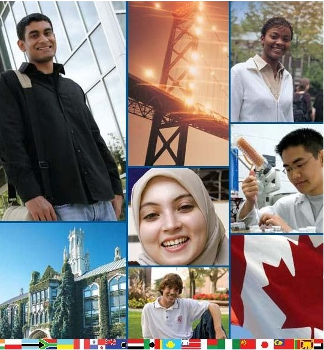

1.6 Estudantes em mudança, mercados em mudança para o ensino superior


Imagem: © greatinternational students.blogspot.com, 2013

1.6.1 Maior diversidade de estudantes
Provavelmente nada mudou mais no ensino superior nos últimos 50 anos do que os próprios estudantes. Nos 'bons velhos tempos', quando menos de um terço dos estudantes do ensino médio ingressava no ensino superior, a maioria vinha de famílias que elas próprias tinham passado pela universidade ou pela faculdade. Geralmente provinham de origens abastadas ou pelo menos financeiramente estáveis. As universidades em particular podiam ser altamente seletivas, aceitando estudantes com os melhores históricos acadêmicos e, portanto, os mais propensos a ter sucesso. As turmas eram menores e os docentes tinham mais tempo para ensinar e menos pressão para pesquisar. A expertise no ensino, embora importante, não era tão essencial então como hoje; bons estudantes estavam em um ambiente em que provavelmente teriam sucesso, mesmo que o professor não fosse o melhor do mundo. Esse modelo 'tradicional' ainda se aplica à maioria das universidades privadas de elite, como Harvard, MIT, Stanford, Oxford e Cambridge, e a algumas faculdades de artes liberais menores. Mas para a maioria das universidades financiadas com recursos públicos e dos cursos superiores comunitários de dois anos nos países desenvolvidos, esse já não é o caso (se é que já o foi).
A base de estudantes tornou-se muito mais diversa. Por exemplo, na Colúmbia Britânica, aproximadamente dois terços da turma completa do 8º ano de 2007/2008 (67%) ingressaram em instituições públicas de ensino superior na Colúmbia Britânica até o outono de 2014 (Heslop, 2016). À medida que as jurisdições estaduais pressionam as instituições a atingir taxas de participação de cerca de 70% de acesso a alguma forma de ensino superior (Ontário, 2011), as instituições precisam alcançar grupos historicamente marginalizados, como minorias étnicas (especialmente afro-americanos e latinos nos EUA), novos imigrantes (na maioria dos países desenvolvidos), estudantes indígenas no Canadá e estudantes com o inglês como segunda língua. Os governos também estão pressionando as universidades a aceitar mais estudantes internacionais, que podem ser cobrados com mensalidades integrais ou maiores, o que por sua vez acrescenta à diversidade cultural e linguística. Em outras palavras, as instituições de ensino superior devem representar o mesmo tipo de diversidade socioeconômica e cultural da sociedade em geral, em vez de serem instituições reservadas a uma minoria de elite.
Também veremos que, em muitos países desenvolvidos, os estudantes universitários são mais velhos do que costumavam ser e não são mais estudantes em tempo integral dedicados apenas a muitos estudos e um pouco de diversão (ou vice-versa). O custo crescente das mensalidades e das despesas de vida força muitos estudantes a trabalhar em período parcial, o que inevitavelmente conflita com os horários regulares das aulas, mesmo que os estudantes sejam formalmente classificados como estudantes em tempo integral. Como resultado, os estudantes estão levando mais tempo para se formar. Nos EUA, o tempo médio de conclusão de um bacharelado de quatro anos é atualmente de 5,1 anos (Shapiro et al., 2016).
1.6.2 O mercado da aprendizagem ao longo da vida
O Conselho das Universidades de Ontário (2012) observou que os estudantes que NÃO vêm diretamente do ensino médio agora constituem 24% de todos os novos ingressantes, e as matrículas desse segmento estão crescendo mais rapidamente do que as dos estudantes que vêm diretamente do ensino médio. Talvez ainda mais significativo, muitos egressos estão retornando mais tarde em suas carreiras para fazer novas disciplinas ou programas, a fim de se manter atualizados em seu domínio do conhecimento em constante mudança. Muitos desses estudantes trabalham em tempo integral, têm família e encaixam seus estudos em torno de seus outros compromissos.

Imagem: © Evolllution.com, 2013

No entanto, é economicamente crucial incentivar e apoiar esses estudantes, que precisam permanecer competitivos em uma sociedade baseada no conhecimento — especialmente porque, com a queda das taxas de natalidade e o aumento da longevidade, em algumas jurisdições os aprendizes ao longo da vida (estudantes que já se formaram, mas estão voltando para mais estudos) em breve superarão em número os estudantes que vêm diretamente do ensino médio. Assim, na University of British Columbia, no Canadá, a idade média de todos os seus estudantes de pós-graduação é agora 31 anos, e mais de um terço de todos os estudantes tem mais de 24 anos. Há também um aumento de estudantes transferindo de cursos superiores de dois anos para universidades — e vice-versa. Por exemplo, no Canadá, no British Columbia Institute of Technology, mais de 20% de seus novos ingressantes a cada ano já possuem um diploma universitário.
1.6.3 Nativos digitais
Outro fator que torna os estudantes um pouco diferentes hoje é sua imersão e facilidade com a tecnologia digital, e em particular com as mídias sociais: mensagens instantâneas, Twitter, videogames, Facebook e uma infinidade de aplicativos (apps) que rodam em uma variedade de dispositivos móveis, como iPads e celulares. Esses estudantes estão constantemente 'conectados'. A maioria dos estudantes chega à universidade ou à faculdade imersa nas mídias sociais, e boa parte de sua vida gira em torno dessas mídias. Alguns comentaristas, como Mark Prensky (2001), argumentam que os nativos digitais pensam e aprendem de forma fundamentalmente diferente em decorrência de sua imersão na mídia digital.
Muitos docentes frequentemente veem essa tecnologia como uma distração. A escuta atenta é impossível se os estudantes estão rolando vídeos ou páginas do Facebook. Muitos docentes gostariam de proibir todos os celulares e tablets de suas aulas. No entanto, uma proibição de celulares é uma tentativa de negar a realidade de viver na era digital. Deveríamos estar educando nossos estudantes no uso adequado da tecnologia do dia a dia para fins de aprendizagem e sociais, e não tentando negar a existência da tecnologia.
Em vez disso, deveríamos incentivar os estudantes a usar seus dispositivos tecnológicos para encontrar, analisar, avaliar e aplicar seu conhecimento. Isso significa dar-lhes tarefas envolventes durante o tempo de aula que exijam o uso de seus celulares. Sim, eles provavelmente usarão o dispositivo para enviar mensagens a outros estudantes — mas isso também pode ser usado para trabalho em grupo e aprendizagem social. Em particular, os celulares podem ser usados para apoiar a aprendizagem de competências de nível superior, como resolução de problemas e pensamento crítico.
Mas isso significa fornecer critérios e procedimentos aos estudantes que permitam sua aprendizagem — e também aprender quando precisam guardar os celulares e se desconectar. Essas são competências e conhecimentos essenciais para a vida na sociedade atual, e é irresponsável para o sistema educacional ignorar tais necessidades. Os estudantes esperam usar as mídias sociais em todos os outros aspectos de suas vidas. Por que a experiência de aprendizagem deveria ser diferente? Exploraremos isso mais a fundo no Capítulo 8, Seção 6.
1.6.4 Do elitismo ao sucesso
Muitos docentes mais velhos ainda têm saudades dos bons velhos tempos em que eram estudantes. Mesmo na década de 1960, quando a Comissão Robbins recomendou uma expansão das universidades na Grã-Bretanha, os reitores das universidades existentes lamentavam: 'Mais significa pior.' No entanto, para as universidades públicas, o ideal socrático de um professor compartilhando seu conhecimento com um pequeno grupo de estudantes dedicados sob uma tília não existe mais, exceto talvez ao nível da pós-graduação, e é improvável que retorne às instituições públicas de ensino superior (exceto talvez na Grã-Bretanha, onde o governo conservador parece estar voltando o relógio para os anos 1950). A massificação do ensino superior abriu, para o alarme dos tradicionalistas, a academia para as grandes massas. No entanto, a massificação do ensino superior é necessária tanto por razões econômicas quanto de mobilidade social.
As implicações dessas mudanças no corpo discente para o ensino universitário e de faculdades são profundas. Em outros tempos, os professores alemães de matemática se orgulhavam de que apenas 5 a 10% de seus estudantes teriam sucesso em seus exames. O nível de dificuldade era tão elevado que apenas os melhores passavam. Uma taxa de conclusão ínfima mostrava o rigor do seu ensino. Era responsabilidade dos estudantes, e não dos professores, atingir o nível exigido. Isso pode ainda ser o objetivo para estudantes de pesquisa de nível superior, mas vimos que hoje as universidades e faculdades têm um propósito um tanto diferente: garantir, tanto quanto possível, que o maior número possível de estudantes saia da universidade devidamente qualificado para a vida em uma sociedade baseada no conhecimento. Não podemos nos dar ao luxo de desperdiçar as vidas de 95% dos estudantes, nem ética nem economicamente. De qualquer forma, os governos estão usando cada vez mais as taxas de conclusão e os diplomas concedidos como indicadores-chave de desempenho que influenciam o financiamento.
É um grande desafio para as instituições e os professores possibilitar que o maior número possível de estudantes tenha sucesso, dada a ampla diversidade do corpo discente. Maior foco em métodos de ensino que levem ao sucesso do estudante, maior individualização da aprendizagem e entrega mais flexível são todos necessários para enfrentar o desafio de um corpo discente cada vez mais diverso. Esses desenvolvimentos colocam muito mais responsabilidade sobre os ombros dos professores e docentes (assim como dos estudantes) e exigem um nível muito mais elevado de competência no ensino.
Felizmente, ao longo dos últimos 100 anos houve uma grande quantidade de pesquisas sobre como as pessoas aprendem, e muitas pesquisas sobre métodos de ensino que levam ao sucesso do estudante. Infelizmente, essas pesquisas não são conhecidas nem aplicadas pela grande maioria dos docentes universitários e de faculdades, que ainda dependem principalmente de métodos de ensino que talvez fossem adequados quando havia turmas pequenas e estudantes de elite, mas que não são mais adequados hoje (ver, por exemplo, Christensen Hughes e Mighty, 2010). Portanto, uma abordagem diferente do ensino, e um uso melhor da tecnologia para ajudar os docentes a aumentar sua eficácia junto a um corpo discente diverso, são agora necessários.
Referências
Christensen Hughes, J. and Mighty, J. (2010) Taking Stock: Research on Teaching and Learning in Higher Education Montreal and Kingston: McGill-Queen's University Press
Council of Ontario Universities (2012) Increased numbers of students heading to Ontario universities Toronto ON: COU
Heslop, J. (2016) Education Pathways for High School Graduates and Non-Graduates Victoria BC: Student Transitions Project, Government of British Columbia
Prensky, M. (2001) 'Digital natives, Digital Immigrants' On the Horizon Vol. 9, No. 5
Robbins, L. (1963) Higher Education Report London: Committee on Higher Education, HMSO
Shapiro, D., et al. (2016) Time to Degree: A National View of the Time Enrolled and Elapsed for Associate and Bachelor's Degree Earners (Signature Report No. 11). Herndon, VA: National Student Clearinghouse Research Center.
Atividade 1.6 Lidando com a diversidade
1. Que mudanças, se houver, você notou nos estudantes que leciona? Em que isso difere da minha análise?
2. De quem é a responsabilidade de garantir o sucesso dos estudantes? Em que medida a diversidade dos estudantes coloca mais responsabilidade sobre os professores e docentes?
3. Você concorda que 'Mais significa pior'? Se sim, que alternativas sugeriria para o ensino superior? Como isso seria financiado?
4. Seu país/estado tem o equilíbrio certo entre educação acadêmica e educação profissionalizante? Damos ênfase excessiva às universidades e insuficiente às faculdades técnicas ou profissionalizantes?
Esta atividade não tem feedback.